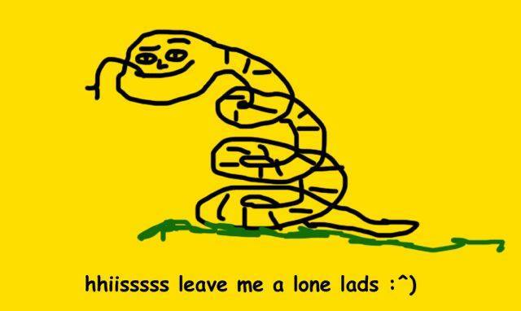
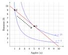
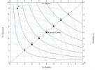
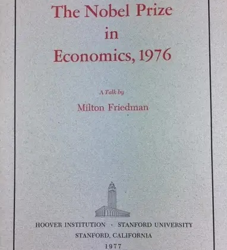

source("../dsan-globals/_globals.r")Week 12: (Machine) Learning What Policies Value
DSAN 5450: Data Ethics and Policy
Spring 2026, Georgetown University
Class Sessions
Schedule
| Start | End | Topic | |
|---|---|---|---|
| Lecture | 3:30pm | 4:00pm | Utility Functions and the Edgeworth Box |
| 4:00pm | 4:30pm | Policy Intervention : Data Property Rights | |
| 4:30pm | 5:00pm | Policy Intervention : “Internalizing” Externalities | |
| Break! | 5:00pm | 5:10pm | |
| 5:10pm | 6:00pm | (Machine) Learning What Policies Value \(\leadsto\) HW4 |
\[ \DeclareMathOperator*{\argmax}{argmax} \DeclareMathOperator*{\argmin}{argmin} \newcommand{\bigexp}[1]{\exp\mkern-4mu\left[ #1 \right]} \newcommand{\bigexpect}[1]{\mathbb{E}\mkern-4mu \left[ #1 \right]} \newcommand{\definedas}{\overset{\small\text{def}}{=}} \newcommand{\definedalign}{\overset{\phantom{\text{defn}}}{=}} \newcommand{\eqeventual}{\overset{\text{eventually}}{=}} \newcommand{\Err}{\text{Err}} \newcommand{\expect}[1]{\mathbb{E}[#1]} \newcommand{\expectsq}[1]{\mathbb{E}^2[#1]} \newcommand{\fw}[1]{\texttt{#1}} \newcommand{\given}{\mid} \newcommand{\green}[1]{\color{green}{#1}} \newcommand{\heads}{\outcome{heads}} \newcommand{\iid}{\overset{\text{\small{iid}}}{\sim}} \newcommand{\lik}{\mathcal{L}} \newcommand{\loglik}{\ell} \DeclareMathOperator*{\maximize}{maximize} \DeclareMathOperator*{\minimize}{minimize} \newcommand{\mle}{\textsf{ML}} \newcommand{\nimplies}{\;\not\!\!\!\!\implies} \newcommand{\orange}[1]{\color{orange}{#1}} \newcommand{\outcome}[1]{\textsf{#1}} \newcommand{\param}[1]{{\color{purple} #1}} \newcommand{\pgsamplespace}{\{\green{1},\green{2},\green{3},\purp{4},\purp{5},\purp{6}\}} \newcommand{\pedge}[2]{\require{enclose}\enclose{circle}{~{#1}~} \rightarrow \; \enclose{circle}{\kern.01em {#2}~\kern.01em}} \newcommand{\pnode}[1]{\require{enclose}\enclose{circle}{\kern.1em {#1} \kern.1em}} \newcommand{\ponode}[1]{\require{enclose}\enclose{box}[background=lightgray]{{#1}}} \newcommand{\pnodesp}[1]{\require{enclose}\enclose{circle}{~{#1}~}} \newcommand{\purp}[1]{\color{purple}{#1}} \newcommand{\sign}{\text{Sign}} \newcommand{\spacecap}{\; \cap \;} \newcommand{\spacewedge}{\; \wedge \;} \newcommand{\tails}{\outcome{tails}} \newcommand{\Var}[1]{\text{Var}[#1]} \newcommand{\bigVar}[1]{\text{Var}\mkern-4mu \left[ #1 \right]} \]
Where We Left Off
- ✅ Policy Intervention : Contracting Along the Pareto Frontier
- 👍 No “external coercion” required: Nash equilibrium \(\Rightarrow\) Self-enforcing (no possible gain from breaking contract, for any agent)
- 👎 Actual contract reached decided entirely by power imbalance 💪🔫
- ✅ Policy Intervention : Pigou Taxes (Law + Fine for violation = externality from violation)
- 👍 Solves all externality problems! (No need for HW3B 🙌)
- 👎 People implementing/enforcing fines have their own incentives, biases, constraints, etc. (>$1 billion in unpaid DC tickets…)
(Remember for projects: Econ antecedent = already-solved political problem!)
Opening the Pandora’s Box of Utility…
…We need to dive a bit more to get to:
Policy Intervention :
Property Rights

Policy Intervention :
Yugoslavia-Style Mergers
Utility Function: Using the Ordering of Numbers to “Encode” the Ordering of Preferences

- Bluey obtains greater utility despite paying the same cost by moving from \(E\) to \(O\)
- \(E\) denotes “Initial Endowment”, \(O\) denotes “Final Outcome”
Two Can Play This Game…

- Bluey obtains greater utility within the same budget by moving from \(E^1\) to \(O^1\)
- Greenie obtains greater utility within the same budget by moving from \(E^2\) to \(O^2\)
The Edgeworth Box
Rotate Greenie’s box 180° and superimpose onto Bluey’s:

Pareto Frontier = Contract(!) Curve

- From initial endowment \(E\), if allowed to trade, “rational” players can reach any allocation along dashed contract curve from \(G\) to \(B\)… (Why not \(A\) or \(H\)?)
- So, what determines which of these points they end up at? (Middle name hint)
{kind=link}
First Fundamental Theorem of Welfare Economics
[Antecedents (Coase Conditions)] \(\Rightarrow\) «markets produce Pareto-optimal outcomes»
(Foundation for “Neoclassical” paradigm)
Rhodesia has a freer press, a more democratic form of government, a greater sympathy with Western ideals than most if not all of the states of Black Africa. Yet we play straight into the hands of our Communist enemies by imposing sanctions on it! (Friedman 1976)
Payoff from Jeff Pointing at Things Saying “Antecedents!” 500x
Consequent only true if antecedents hold! Otherwise, proper answer becomes “It depends! Let’s see if data can help us find out!” (Will minimum wage hurt/help blah blah blah… “It depends! Tell me the details!”) (Will new condos blah blah blah yimby nimby…) (Will re-allocating welfare budget from \(X\) to \(Y\) blah blah blah… 👀 HW4)
[Economic inequality] is a social law, something in the nature of man. (Pareto 1896)
We’ve got a [thing] made by men, isn’t that something we should be able to change? (Steinbeck 1939)
Coase Antecedents \(\approx\) equalized power!
- Ex 1: Perfect Competition \(\Rightarrow\) (\(\neg\) monopoly) \(\wedge\) (\(\neg\) monopsony) \(\Rightarrow\) everyone’s outside option equally good \(\Rightarrow\) no take-it-or-leave-it coercion possible (try to coerce, I’ll say no and go to one of the other \(\infty\) people offering equally good options)
- Ex 2: No Informational Asymmetries \(\Rightarrow\) Can’t “trick me” into buying defective product (Akerlof (1970), “Market for Lemons”)
So… What Happens When Antecedents Don’t Hold?
\(\neg\)(Coase Antecedents) \(\Rightarrow\) Unequal Power… Puts us in realm of Descriptive Ethics!
[What is] right, as the world goes, is only in question between equals in power; otherwise, the strong do as they please and the weak suffer what they must. [Thucydides (2013); c. 411 BC] (Think of necessary vs. sufficient conditions!)
Think of how Gauss-Markov Assumptions \(\Rightarrow\) OLS is BLUE, but DSAN 5300 = what to do when G-M Assumptions don’t hold
Final project brainstorming protip! Think through:
- Which cases “break” Coase Axioms? (more honored in the breach)
- How might we tackle resulting “imperfections” through policy1? (DSAN metaphor: perhaps as simple as heteroskedasticity-robust SEs 🤔 usually not!)
Our violation (HW3B): Data externalities!
- “Auto-fixed” if we have a genie who can grant perfect Pigou Tax…
- More feasible policies (Acemoglu and Johnson 2023): property rights in data, Yugoslav nationalization \(\leadsto\) [Walmart People’s Republic of Walmart]
Policy Intervention : Property Rights
- Rawlsian Rights: Vetos on societal decisions; Constitution can make some inalienable (can’t sell self into slavery), some alienable
- Property rights: alienable. You can gift or sell the rights if you want (veto is over society just, like, taking your property if someone else would be happier with it)
Case : Society decides Right to Clean Air \(\prec\) Right to Smoke \(\Rightarrow\) Start at \(E\)
- \(A\) can pay \(B\) to alienate right (Pay $50/month, can smoke 5 ciggies) \(\leadsto\) \(X\)
- Movement along light blue curve: giving up \(x\) money for \(y\) smoke, equally happy. \(u_A(p)\) identical for \(p\) on curve
- Movement to higher light blue curve () \(\Rightarrow\) greater utility \(u_A' > u_A\)
Case Society decides Smoke \(\prec\) Clean Air \(\Rightarrow\) Repeat for \(E' \leadsto X'\)

Why Exactly Does [Commodifying Rights] Sometimes Enable [“Cancelling Out” Externalities]?
- The key: Forces agent \(i\) to pay a cost for inflicting disutility on agent \(j\)!
- (Here please note: “\(X\) sometimes enables \(Y\)” does not mean \(X\) is a necessary or sufficient condition for \(Y\)! Think of walking into a dark room, trying different light switches until one turns on the overhead light)
- Dear reader, I know what you’re thinking… But Jeff!! This is all so abstract and theoretical!! We’re sick of your ivory-tower musings, get your head out of the clouds and make it relevant to our day-to-day lives, by relating it back to Yugoslavia’s 1965 economic reforms!!
- Don’t worry, I’ve listened to your concerns, and the next slide is here for you 😌
Policy Intervention : “Yugoslav Nationalization”
Last reminder: Externalities \(\Leftrightarrow\) I get reward, others pay costs 🥳
- Steel Mill \(S\) produces amount of steel \(s\) \(\leadsto\) pollution \(x\), total cost \(c_s(s,x)\)
- Fishery \(F\) “produces” amount of fish [\(x \leadsto\)] \(f\), total cost \(c_f(f,x)\)
- \(S\) optimizes (price per steel \(p_s\))
\[ s^*_{\text{Priv}}, x^*_{\text{Priv}} = \argmax_{s,\small\boxed{x}}\left[ p_s s - c_s(s, x) \right] \]
- While \(F\) optimizes (price per fish \(p_f\))
\[ f^*_{\text{Priv}} = \argmax_{f}\left[ p_f f - c_f(f, x) \right] \]
- If [Yugoslavia-style] nationalized, new optimization of joint steel-fish venture is
\[ s^*_{\text{Yugo}}, f^*_{\text{Yugo}}, x^*_{\text{Yugo}} = \argmax_{s, f, x}\left[ p_s s + p_f f - c_s(s, x) - c_f(f, x) \right] \]
- Can prove that \(o(s^*_{\text{Yugo}}, f^*_{\text{Yugo}}, x^*_{\text{Yugo}})\) Pareto-dominates \(o(s^*_{\text{Priv}}, x^*_{\text{Priv}}, f^*_{\text{Priv}})\)
- What determines which agents get to ignore externalities? (Dead horse/middle name)
References
Acemoglu, Daron, and Simon Johnson. 2023. Power and Progress: Our Thousand-Year Struggle Over Technology and Prosperity. PublicAffairs. https://www.dropbox.com/scl/fi/d9tsmbsyff3xpz597lzc5/PowerandProgress_OurThousand-YearStruggleover-DaronAcemoglu-SimonJohnson.pdf?rlkey=2cntwyavjtawbpnnyutjhas3y&dl=1.
Akerlof, George A. 1970. “The Market for "Lemons": Quality Uncertainty and the Market Mechanism.” The Quarterly Journal of Economics 84 (3): 488–500. https://doi.org/10.2307/1879431.
Friedman, Milton. 1976. “Rhodesia.” Newsweek, May 3. https://advance.lexis.com/document/?pdmfid=1519360&crid=a4ca71c1-c361-4ea3-89c7-049738ac7f81&pddocfullpath=%2Fshared%2Fdocument%2Fnews%2Furn%3AcontentItem%3A3SJ4-F1S0-0008-X3KG-00000-00&pdcontentcomponentid=5774&pdteaserkey=sr0&pditab=allpods&ecomp=hc-yk&earg=sr0&prid=4aa60292-a9ad-4ade-8214-34bdc1346a6d.
Malm, Andreas. 2021. How to Blow Up a Pipeline. Verso Books. https://books.google.com?id=qUrSDwAAQBAJ.
Pareto, Vilfredo. 1896. Cours d’Économie politique. Librairie Droz. https://books.google.com?id=s249oYSJbVMC.
Thucydides. 2013. The War of the Peloponnesians and the Athenians. Cambridge University Press. https://books.google.com?id=dSYnCTf3rSAC.
Varian, Hal R. 2006. Intermediate Microeconomics: A Modern Approach. W.W. Norton.
Footnotes
Recall: [Do Nothing, Tax Credits, Emissions Markets, Climate Engineering, Antitrust Legistlation] \(\in \text{Policy Set}\);
[“Socialize the Data Centres!”, Blowing Up Oil Pipelines (Malm 2021), Bolshevik Revolution] also \(\in \text{Policy Set}\)↩︎